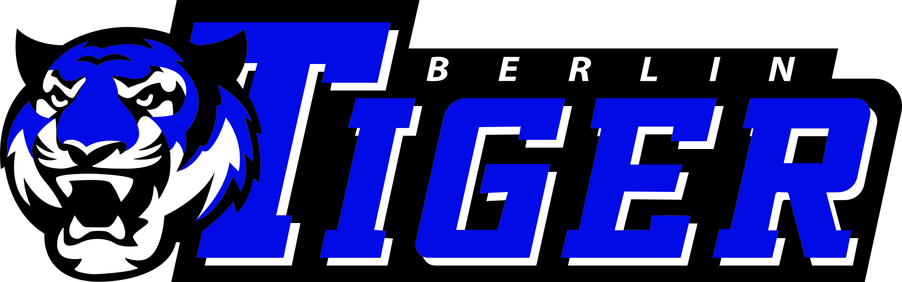
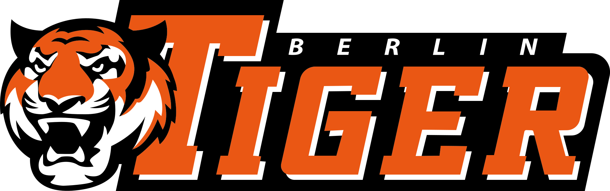

Closest match
B — Blue twin of main (`_dbv_2`)
Same silhouette as main; orange → blue. Smallest visual jump. Loses explicit “DTB” lettering but stays unmistakably Berlin Tiger.

Same header height (2.5rem) as the live site. Goal: make the swap between
main and DBV/DTB feel like a related variant, not a different brand.
Main = orange tiger + “TIGER”. DBV = navy “DTB” wordmark + gold tiger. Different mark, color, and optical weight — biggest jump when navigating to /dtb.

Same silhouette as main; orange → blue. Smallest visual jump. Loses explicit “DTB” lettering but stays unmistakably Berlin Tiger.

Same DTB artwork as current, tighter viewBox. Still a different mark from main — jump stays large, but framing may sit better in the header slot.
How the main mark reads on the light header background (not orange).
Current DTB mark on light header — gold tiger + navy DTB.
If we switch the DBV header to berlintiger-logo_dbv_2.svg, the transition
keeps the same tiger + TIGER lockup and only changes the accent color to DBV blue.
Prefer this if “same family” matters more than showing “DTB” in the mark.
Would need an SVG edit (gold #CD983A → closer to tiger orange or a shared navy+orange system).
Not applied yet — say if you want this direction and I’ll mock a recolored DTB file next.